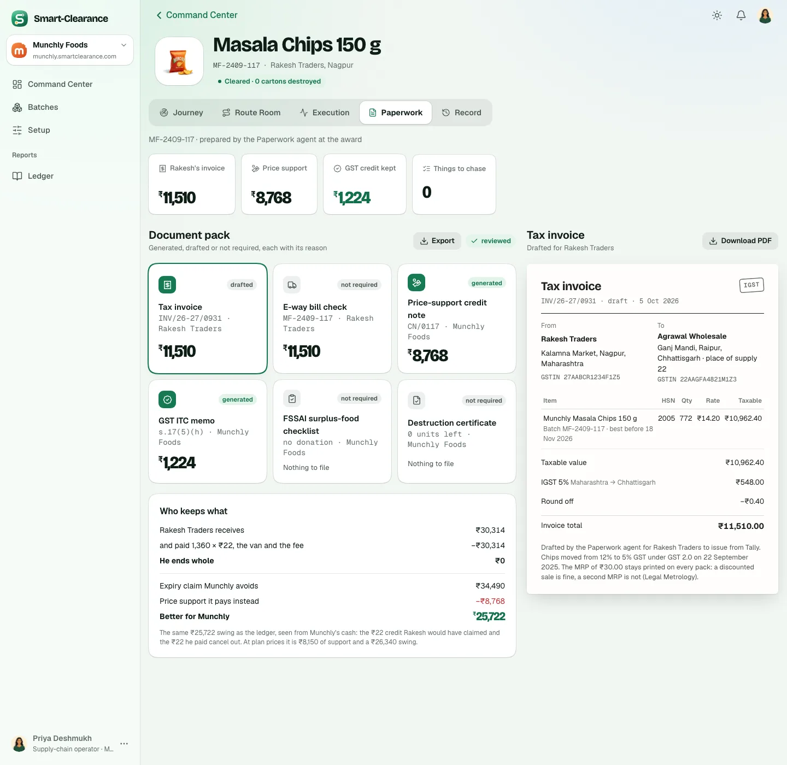
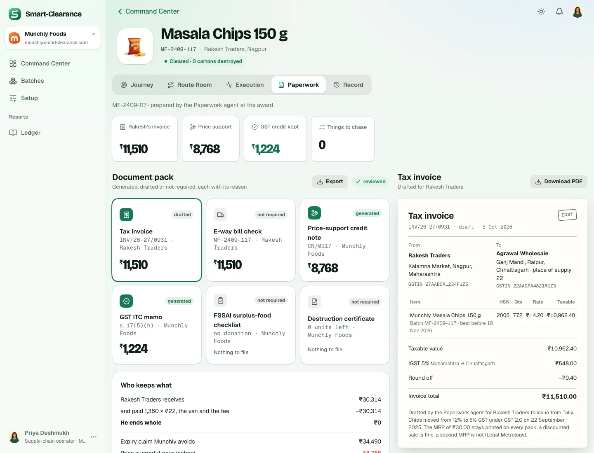
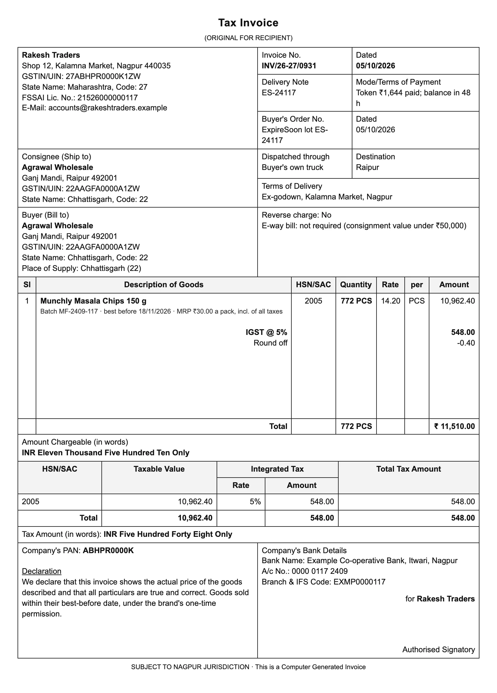
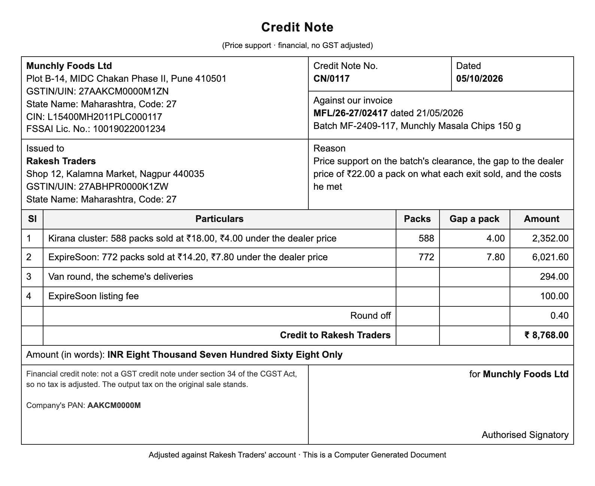
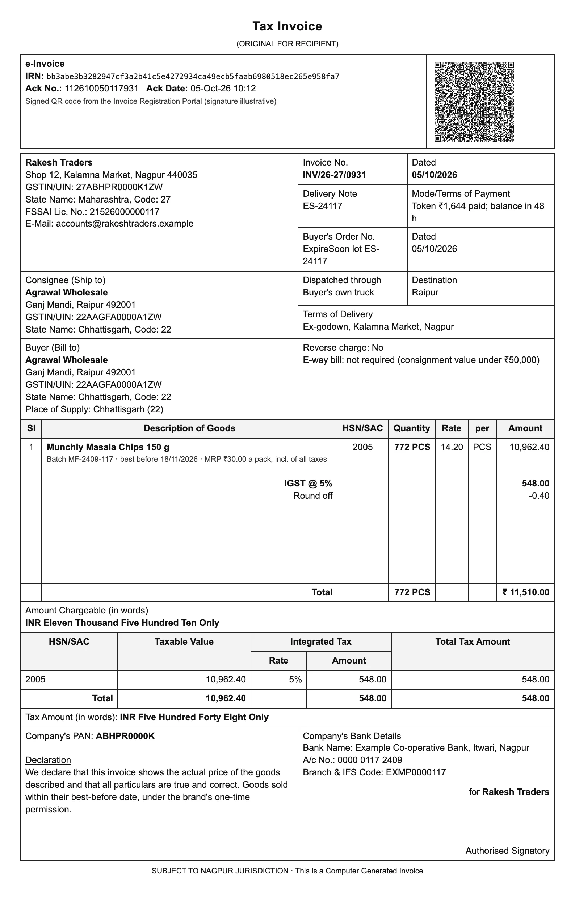
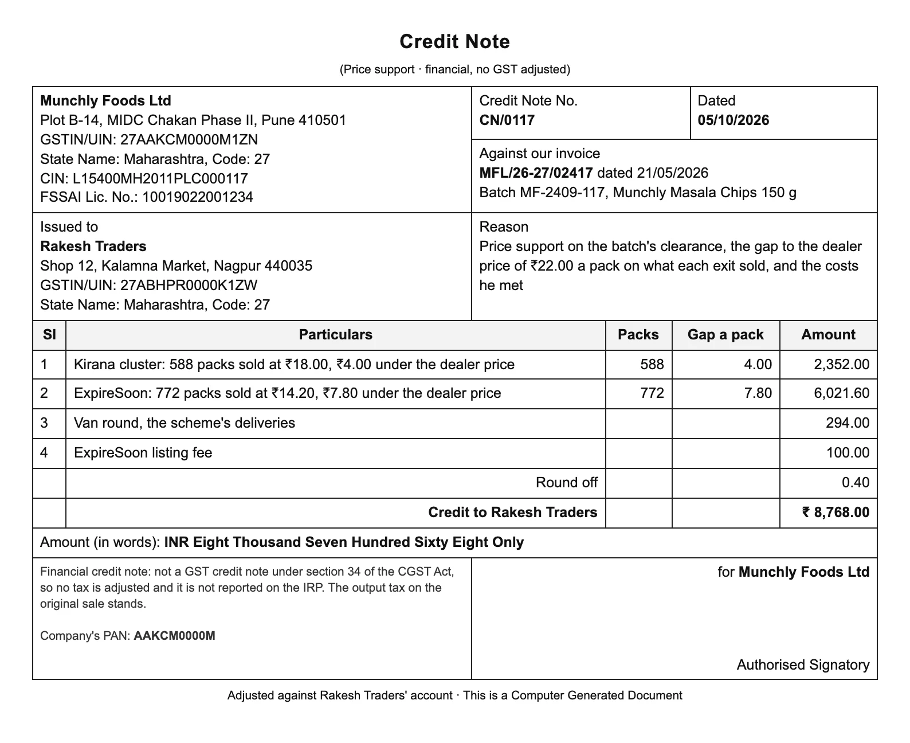
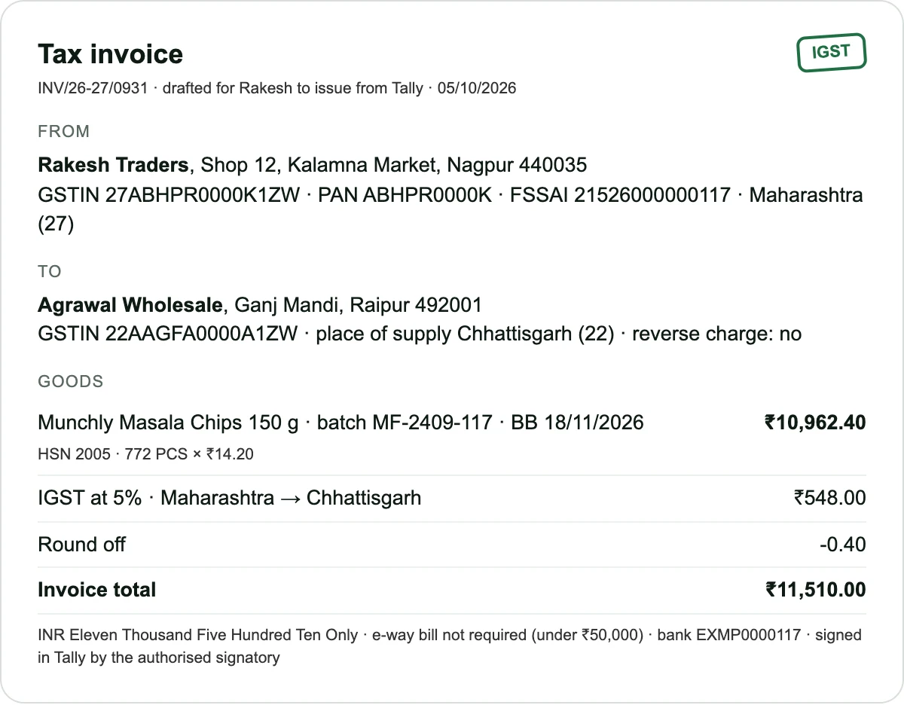
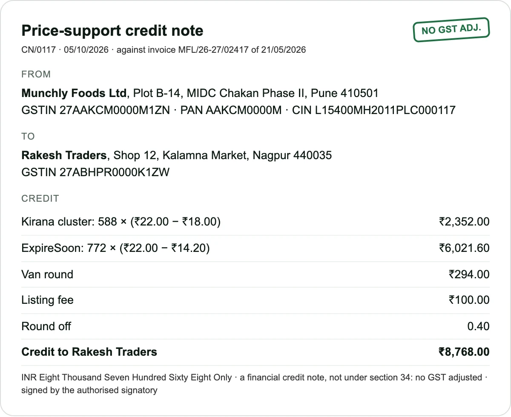

GST papers
SC-148 · Munchly's workspace · three ways for the tax invoices and credit notes of every batch to read as real GST papers: valid GSTINs, both parties' addresses and state codes, the place of supply, the HSN summary, the amount in words and the signatory.
The maintainer (10 Oct):
- “Same for GST bills and invoices, they should be proper with GST number and realistic as much as possible.”
- “I need you to update all images and invoices as needed for all past and present batches.”
The carton labels are the same request's first part, on their own board: SC-147.
What the papers show today


In every option
| Party | State | GSTIN | PAN |
|---|---|---|---|
| Munchly Foods Ltd | Maharashtra (27) | 27AAKCM0000M1ZN | AAKCM0000M, a company |
| Rakesh Traders | Maharashtra (27) | 27ABHPR0000K1ZW | ABHPR0000K, a proprietor |
| Lakshmi Agencies | Telangana (36) | 36AAJFL0000L1ZM | AAJFL0000L, a firm |
| Patil Distributors | Maharashtra (27) | 27AAKFP0000P1Z8 | AAKFP0000P, a firm |
| Gupta & Sons | Madhya Pradesh (23) | 23AAHFG0000G1ZB | AAHFG0000G, a firm |
| Agrawal Wholesale | Chhattisgarh (22) | 22AAGFA0000A1ZW | AAGFA0000A, a firm |
The options
Each shows the story's tax invoice, Rakesh Traders to Agrawal Wholesale (Maharashtra to Chhattisgarh, so IGST), and the price-support credit note, Munchly to Rakesh Traders.
Option A · As Tally prints it
The invoice is drafted for Rakesh to issue from Tally, so it reads as Tally's tax invoice: the seller's block, the invoice number and dates, delivery and dispatch, consignee and buyer with their GSTINs, state codes and the place of supply, the goods with HSN, quantity, rate and per, the HSN summary with the integrated tax, the amounts in words, the PAN, the bank and the declaration, “for Rakesh Traders · Authorised Signatory”. The credit note follows the same layout from Munchly.
- Trade-offs
- The layout every Indian distributor and accountant knows on sight.
- Every field rule 46 asks for, and Munchly's own identity on its notes.
- No e-invoice: a business turning over more than ₹5 crore must report a B2B invoice to the Invoice Registration Portal.


Option B · The e-invoice
RecommendedOption A, with what a distributor of Rakesh Traders' size has on a B2B invoice: the IRN, the acknowledgement number and date, and the signed QR code from the Invoice Registration Portal at the head. The credit note is as in A, and says why it is not reported to the portal (a financial note).
- Trade-offs
- The most realistic: e-invoicing has applied to every business over ₹5 crore of turnover since August 2023.
- The IRN is worked out as the portal does (a SHA-256 of the GSTIN, year, type and number); the QR scans to its fields. Its signature is illustrative, and says so.
- One more thing to explain in a demo.


Option C · The app's paper, completed
The paper keeps the app's own look, as today, with every missing field added: the seller's address, GSTIN, PAN and FSSAI licence, the buyer's GSTIN, the place of supply and reverse charge, HSN with the quantity and rate, the amount in words, the e-way bill line, the bank and the signatory. The credit note names the invoice it is against.
- Trade-offs
- Changes least, and reads easily on a phone.
- Looks like the app's summary of a paper, not the paper a distributor would file.


Side by side
| A · As Tally prints it | B · The e-invoice | C · The app's paper, completed | |
|---|---|---|---|
| Layout | Tally's, in the sheet and the PDF | Tally's, with the e-invoice block | The app's, in the sheet and the PDF |
| GSTINs, PAN, state codes | Yes | Yes | Yes |
| HSN summary, words | Yes | Yes | Words only |
| IRN and signed QR | No | Yes, on the tax invoice | No |
| On a phone | The page drawn to scale | The page drawn to scale | Reads as the app does |
Recommended: option B
The e-invoice is the paper a distributor like Rakesh Traders actually issues to a business buyer today: Tally's layout with every field the rules ask for, and the IRN and signed QR the portal adds. Munchly's own credit notes carry its GSTIN, PAN and CIN, and say why they adjust no GST.
To decide
- Which option to build.
- The kiranas' orders: today each is an order log on the scheme. Should each shop's order also get its own tax invoice from the distributor (intra-state, CGST and SGST at 2.5% each; 31 for the chips, about 400 across the history), or stay an order log?